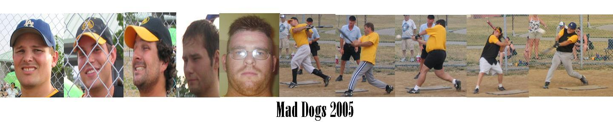
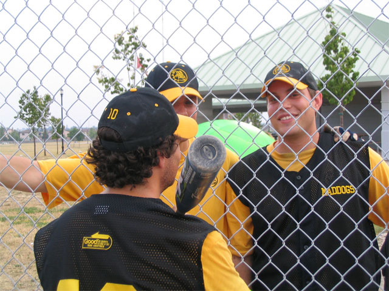
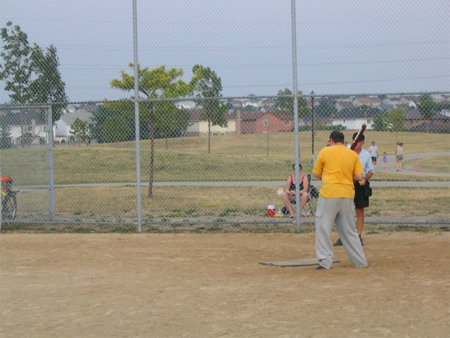
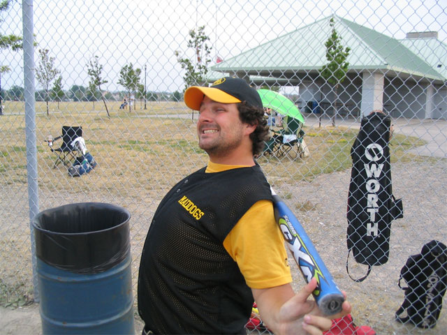
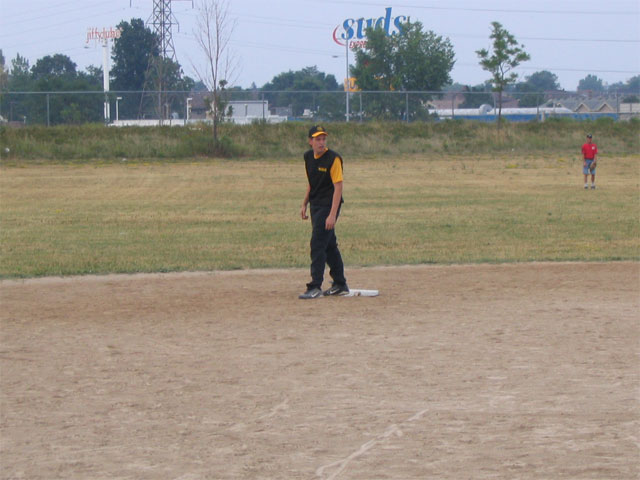

MadDogs 2005 Season
Hamilton Slo-Pitch - Complete Season Archives
🥎 About the 2005 Season
The 2005 season brought the most comprehensive documentation in MadDogs history, with detailed game schedules, box scores, and tournament statistics.
2005 Season Resources
Photo Gallery
Team photos from the 2005 season - displayed inline:






Media Archives
- Full Photo Gallery - All 20+ team photos
- 🏆 Orillia Tournament Photos - 60+ photos from the tournament weekend (inline gallery)
- League Standings - Official league standings (external)
Other Seasons
- 2004 Season - Previous season
- MadDogs Home - All seasons and resources
Legacy Links
- Softball Links - Related resources
- The Infamous Red Hand - Team tradition
This page preserves the legacy navigation from the original 2005 MadDogs website.